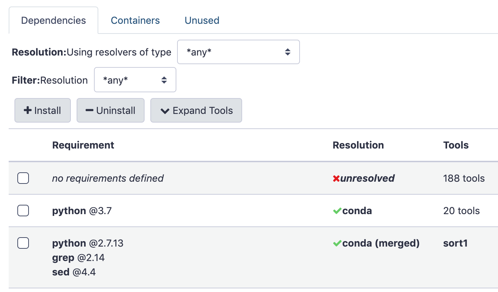
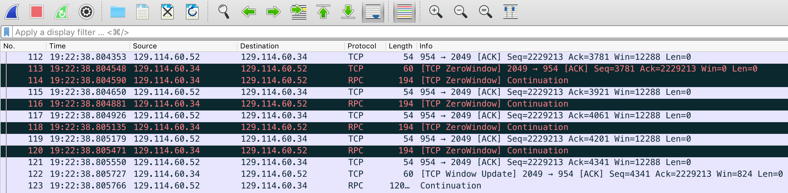

Galaxy Troubleshooting
Contributors
In system administration…
Everything always goes wrong
When things go wrong, where do you begin?
–
LOGS
–
.left[Check all the logs]
- gunicorn/gravity logs
- handler logs (if not all-in-one)
- Pulsar logs
- nginx error and access logs
- syslog/messages
- authlog
- browser console log
Most common problems
- Startup problems
- Disk Full, Database Disk Full
- Web/UI problems
- Tool failures
- Job execution problems
- General performance problems
- Dependency issues
- Other stuff
Startup problems
–
Where do you begin? In the…
–
LOGS
Specifically, gravity/gunicorn and job handler logs.
Database migration
.reduce90[
galaxy.model.migrations.OutdatedDatabaseError: Your galaxy database has version e0e3bb173ee6, but
this code expects version caa7742f7bca. To upgrade your database, run `manage_db.sh upgrade`. For
more options (e.g. upgrading/downgrading to a specific version) see instructions in that file.
Please remember to backup your database before migrating.
]
Use Ansible! This is permanently solved for you.
Otherwise, upgrade as instructed.
.left[If you believe this message is in error, you can:]
- Check DB table
alembic_version, columnversion. - Check folder
lib/galaxy/model/migrations/alembic/versions_gxy/- the latest migration should match the DB. - Clean the
*.pycfiles in migrate versions folder to make sure there is no remnant from other code revisions.- See makepyc.py in galaxyproject.galaxy.
- Ansible role does this for you.
class: left
Database migration
Downgrading - Perform in this order:
- Downgrade the DB with
manage_db.sh - Downgrade Galaxy with
git checkout - Clean
*.pyc
Stuck in a restart loop
.reduce90[
Executing: PYTHONPATH=lib GALAXY_CONFIG_FILE=/srv/galaxy/config/galaxy.yml VIRTUAL_ENV=/srv/galaxy/venv
/srv/galaxy/venv/bin/gunicorn 'galaxy.webapps.galaxy.fast_factory:factory()' --timeout 300 ...
DEBUG:galaxy.app:python path is: /srv/galaxy/server, /srv/galaxy/venv/bin, /srv/galaxy/server/lib, ...
... bunch of stuff ...
Executing: PYTHONPATH=lib GALAXY_CONFIG_FILE=/srv/galaxy/config/galaxy.yml VIRTUAL_ENV=/srv/galaxy/venv
/srv/galaxy/venv/bin/gunicorn 'galaxy.webapps.galaxy.fast_factory:factory()' --timeout 300 ...
DEBUG:galaxy.app:python path is: /srv/galaxy/server, /srv/galaxy/venv/bin, /srv/galaxy/server/lib, ...
... bunch of stuff ...
Executing: PYTHONPATH=lib GALAXY_CONFIG_FILE=/srv/galaxy/config/galaxy.yml VIRTUAL_ENV=/srv/galaxy/venv
/srv/galaxy/venv/bin/gunicorn 'galaxy.webapps.galaxy.fast_factory:factory()' --timeout 300 ...
DEBUG:galaxy.app:python path is: /srv/galaxy/server, /srv/galaxy/venv/bin, /srv/galaxy/server/lib, ...
...
]
- Open the log without following
- Scroll to the end
- Search/scroll back to the last startup attempt
- The lines directly preceding should offer some insight
Stuck in a restart loop
The reason that Galaxy is dying might not be in the log. If it’s not, then
If using systemd then it should be in journalctl -eu galaxy-gunicorn
If using something else, it’s wherever stderr is being redirected to (supervisor?)
Or maybe the system is killing it… (/var/log/{messages,syslog,kern.log}, dmesg)
Web/UI Problems
–
Where do you begin? In the…
–
LOGS
Specifically: gunicorn, nginx, and browser console logs
502 Bad Gateway
Your reverse proxy has failed to connect to the Galaxy socket
systemctl status galaxy-gunicorn- Check that Galaxy is running / not in a reboot loop
- Check that your proxy and Galaxy/gunicorn socket options match
- For UNIX domain sockets, ensure the web server user can r/w the socket
- Check proxy server logs (e.g.
/var/log/nginx) - Check gunicorn logs for
[<PID>] [ERROR] Connection in use: ('localhost', 8080)- Check that something is listening on the correct port (
sudo ss -tlpn 'sport = :port'(demo!) orsudo lsof -i :port(demo!)) - If the culprit is gunicorn, make sure it’s not an old one!
- Check that something is listening on the correct port (
504 Gateway Timeout
Use htop (demo!) and ps (demo!)
htopprocess state D (kernel uninterruptable sleep)?
.reduce90[
$ htop -u galaxy
0[|| 1.6%] Tasks: 98, 244 thr; 1 running
1[|| 2.7%] Load average: 105.04 102.08 91.04
Mem[||||||||||||||||||||||||||||||||||||||2.28G/15.6G] Uptime: 3 days, 15:46:31
Swp[ 0K/0K]
PID USER PRI NI VIRT RES SHR S CPU%▽MEM% TIME+ Command
3440 galaxy 20 0 2806M 297M 53364 D 17.2 5.2 3:11.40 python3 gunicorn ...
...
]
504 Gateway Timeout
psprocess state D?
.reduce90[
$ ps uwwU galaxy
USER PID %CPU %MEM VSZ RSS TTY STAT START TIME COMMAND
galaxy 3440 17.2 5.2 2873344 304128 ? D Nov10 3:11 python3 gunicorn ...
...
]
504 Gateway Timeout
Cycling state D/S/R is fine, but stuck on D is Very Bad™
Probably IO - check filesystems, disks.
Restart Galaxy
.reduce70[.footnote[A later slide will cover how to investigate kernel uninterruptable sleep processes]]
504 Gateway Timeout or slow UI
Check load
$ uptime
16:08:15 up 3 days, 8:34, 8 users, load average: 0.12, 0.23, 0.24
Averages are 1, 5, 15 minutes.
Average should be <= number of cores (lscpu, (beware SMT) or just htop)
More on troubleshooting load later
Where do you begin? In the…
LOGS*
–
*often I now begin in Grafana
504 Gateway Timeout or slow UI
- Investigate load
- Web server(s)
- Database server
- Investigate memory usage, swapping
- Investigate iowait
Galaxy UI is slow
- Tutorial from @mvdbeek
- Use Galaxy heartbeat (not super relevant anymore thanks to…)
- Use
py-spy(demo later!)
Blank page or no CSS/JavaScript
Serving of static content is broken.
- Check browser console for 404 errors.
- Check proxy error log for permission errors.
- Verify that your proxy static configuration is correct.
- If you have recently upgraded Galaxy or changed the GUI in some way, you will need to rebuild the client
Tool failures
Tools can fail for a variety of reasons, some valid, some invalid.
Some made up examples follow.
Tool missing from Galaxy
- Restart Galaxy and watch the log for
Loaded tool id: toolshed.g2.bx.psu.edu/repos/iuc/sickle/sickle/1.33, version: 1.33 into tool panel.... - After startup, check
integrated_tool_panel.xmlfor ```xml
- If it is TS tool check `shed_tool_conf.xml` for
```xml
<tool file="toolshed.g2.bx.psu.edu/repos/iuc/sickle/43e081d32f90/sickle/sickle.xml" guid="toolshed.g2.bx.psu.edu/repos/iuc/sickle/sickle/1.33">
...
</tool>
- Multiple job handlers? Sometimes they don’t all get the update.
Tool errors
Tool stdout/stderr is available in UI under “i” icon on history dataset
.left[Debugging on the filesystem:]
- Set
cleanup_jobtoonsuccess - Cause a job failure
- Go to job working directory (find in logs or
/srv/galaxy/jobs/<hash>/<job_id>) - Poke around, try running things (
srun --pty bashconsidered useful)
Familiarize yourself with the places Galaxy keeps things (demo?)
Tool errors - stderr
Galaxy considers any output to standard error (stderr) to be an error when no tool profile version is set by a tool.
Why would it do thisSpeaker Notes?!?!!!11
In the old days, tools were bad about setting the exit code on failure, so it could not be trusted. Galaxy had no functionality to inspect output to decide on failure.
class: left
Tool errors
So what if tool stderr contains:
Congratulations, running SuperAwesome tool was successful!
What happens: job fails (!!?!?)
Solutions:
- If the wrapped tool uses proper exit codes, use
<tool profile="16.04">or later to ignore stderr - Using current tool development best practices ensures this is the case
- List of tool profiles
class: left
Tool errors
Tool output contains:
Warning: Discarded 10000 lines of /input/dataset_1.dat because they looked funny
Maybe a problem, maybe not.
Solutions:
- Check tool input(s) and parameters (maybe requires some biological knowledge)
- Verify input is not corrupt
- User education
class: left
Tool errors - memory errors
Tool output contains one of:
MemoryError # Python
what(): std::bad_alloc # C++
Segmentation Fault # C - but could be other problems too
Killed # Linux OOM Killer
Solutions:
- Change input sizes or params
- Map/reduce?
- Decrease the amount of memory the tool needs
- Increase the amount of memory available to the job
- Request more memory from cluster scheduler
- Use job resubmission to automatically rerun with a larger memory allocation
- Cross your fingers and rerun the job
class: left
Tool errors - system errors
Tool output contains:
open(): /input/dataset_1.dat: No such file or directory
Solutions:
- Verify that
/input/dataset_1.datexists.- On node the job ran on
- As the user the job ran as
- Fix the filesystem error (NFS?) and rerun the job
- See NFS caching errors slide later
class: left
Tool errors - dependency problems
Tool output contains:
sh: command not found: samtools
Solutions:
- Verify that
tool_dependency_diris accessible on the cluster, as the user running Galaxy jobs - Verify that tool dependencies are properly installed: Galaxy UI “Admin > Manage dependencies”
- Use BioContainers (Docker/Singularity)
Manage Dependencies
An incredibly useful feature to hit unruly tool dependencies with a large hammer.

–
(demo!)
An aside - dependency problems on geriatric Galaxies
Galaxy Tool Shed dependencies are dead.1 If you don’t know what Tool Shed dependencies are (lucky you) skip this slide.
Don’t attempt to fix Galaxy Tool Shed dependencies, just update tool and use container (or Conda) deps.
Put Conda first in dependency_resolvers_conf.xml if you still need to support both.
.reduce70[.footnote[1 The Tool Shed should only be used for Galaxy Tool configuration files and wrapper scripts]]
class: left
Tool errors - dependency problems
Tool output contains:
foo: error while loading shared libraries: libdeepthought.so.42: cannot open shared object file: No such file or directory
foo was compiled against libdeepthought.so.42 but it’s not on the runtime linker path
Solutions:
- Reinstall tool dependencies (“Admin > Manage dependencies”). If it still fails2:
- Determine conda package providing
libdeepthought.so - Downgrade it to the version that provides
libdeepthought.so.42
- Determine conda package providing
- Use BioContainers (Docker/Singularity)
.center[.reduce70[.footnote[2 First, Google the error because someone named Björn has probably already found and fixed the problem.]]]
Speaker Notes Galaxy ensures that the correct version(s) of tool(s) immediate dependencies are controlled, but dependencies of dependencies are up to conda. Occasionally, upgrades to these second level dependencies break existing conda packages, requiring package authors to update the first level dependencies to correct the issue.
class: left
Tool errors - Empty green history item
- The tool is not correctly detecting error conditions: inspect stdout/stderr
- The tool correctly produced an empty dataset for the given params, inputs
Solutions:
- Fix the tool wrapper to detect errors
- User education
Summary of types of tool failures
- Input/parameter problem (user or tool wrapper author problem)
- Tool wrapper bug (tool wrapper author problem)
- Tool bug (tool wrapper author or tool developer problem)
- Resource problem (sysadmin problem)
–
Everything else: always the sysadmin’s problem
One last word on tool errors
All IUC/devteam tools in the Tool Shed have tests
Use these tests (automateable with Ephemeris!) to verify that the tool works in the basic case
Job execution problems
class: smaller
Jobs aren’t running: always gray
Corresponds to job.state = 'new' or 'queued' in database
.left[Check the Galaxy server log for errors. Successful job lifecycle:]
galaxy.tools INFO 2023-04-20 13:51:20,736 [pN:main.1,p:273250,tN:WSGI_0] Validated and populated state for tool request (4.308 ms) galaxy.tools.actions INFO 2023-04-20 13:51:20,747 [pN:main.1,p:273250,tN:WSGI_0] Handled output named out_file1 for tool secure_hash_message_digest (0.756 ms) galaxy.tools.actions INFO 2023-04-20 13:51:20,759 [pN:main.1,p:273250,tN:WSGI_0] Added output datasets to history (12.102 ms) galaxy.tools.actions INFO 2023-04-20 13:51:20,761 [pN:main.1,p:273250,tN:WSGI_0] Setup for job Job[unflushed,tool_id=secure_hash_message_digest] complete, ready to be enqueued (1.097 ms) galaxy.tools.execute DEBUG 2023-04-20 13:51:20,761 [pN:main.1,p:273250,tN:WSGI_0] Tool secure_hash_message_digest created job None (21.968 ms) galaxy.web_stack.handlers INFO 2023-04-20 13:51:20,792 [pN:main.1,p:273250,tN:WSGI_0] (Job[id=2,tool_id=secure_hash_message_digest]) Handler '_default_' assigned using 'db-skip-locked' assignment method galaxy.tools.execute DEBUG 2023-04-20 13:51:20,797 [pN:main.1,p:273250,tN:WSGI_0] Created 1 job(s) for tool secure_hash_message_digest request (60.168 ms) galaxy.jobs.handler DEBUG 2023-04-20 13:51:20,879 [pN:handler_1,p:272701,tN:JobHandlerQueue.monitor_thread] Grabbed Job(s): 2 tpv.rules.gateway INFO 2023-04-20 13:51:20,920 [pN:handler_1,p:272701,tN:JobHandlerQueue.monitor_thread] loading tpv rules from: ['https://gxy.io/tpv/db.yml', '/srv/galaxy/config/TPV_DO_NOT_TOUCH/tpv_rules_local.yml'] tpv.rules.gateway INFO 2023-04-20 13:51:21,266 [pN:handler_1,p:272701,tN:JobHandlerQueue.monitor_thread] Watching for changes in file: /srv/galaxy/config/TPV_DO_NOT_TOUCH/tpv_rules_local.yml galaxy.util.watcher DEBUG 2023-04-20 13:51:21,266 [pN:handler_1,p:272701,tN:JobHandlerQueue.monitor_thread] Watching for changes to file: /srv/galaxy/config/TPV_DO_NOT_TOUCH/tpv_rules_local.yml tpv.core.entities DEBUG 2023-04-20 13:51:21,354 [pN:handler_1,p:272701,tN:JobHandlerQueue.monitor_thread] Ranking destinations: [runner=local_runner, ... (line truncated) galaxy.jobs.mapper DEBUG 2023-04-20 13:51:21,354 [pN:handler_1,p:272701,tN:JobHandlerQueue.monitor_thread] (2) Mapped job to destination id: local_env galaxy.jobs.handler DEBUG 2023-04-20 13:51:21,370 [pN:handler_1,p:272701,tN:JobHandlerQueue.monitor_thread] (2) Dispatching to local_runner runner galaxy.jobs DEBUG 2023-04-20 13:51:21,387 [pN:handler_1,p:272701,tN:JobHandlerQueue.monitor_thread] (2) Persisting job destination (destination id: local_env) galaxy.jobs DEBUG 2023-04-20 13:51:21,402 [pN:handler_1,p:272701,tN:JobHandlerQueue.monitor_thread] (2) Working directory for job is: /data/jobs/000/2 galaxy.jobs.runners DEBUG 2023-04-20 13:51:21,412 [pN:handler_1,p:272701,tN:JobHandlerQueue.monitor_thread] Job [2] queued (41.730 ms) galaxy.jobs.handler INFO 2023-04-20 13:51:21,423 [pN:handler_1,p:272701,tN:JobHandlerQueue.monitor_thread] (2) Job dispatched galaxy.jobs DEBUG 2023-04-20 13:51:21,500 [pN:handler_1,p:272701,tN:LocalRunner.work_thread-3] Job wrapper for Job [2] prepared (70.012 ms) galaxy.jobs.command_factory INFO 2023-04-20 13:51:21,508 [pN:handler_1,p:272701,tN:LocalRunner.work_thread-3] Built script [/data/jobs/000/2/tool_script.sh] for tool command [python '/srv/galaxy/server/tools/filters/secure_hash_message_digest.py' --input '/data/datasets/5/9/6/dataset_596da164-5b91-4003-8699-db43afd9f26d.dat' --output '/data/jobs/000/2/outputs/galaxy_dataset_bfc51e23-4d98-4968-b9f6-a7fc970fad28.dat' --algorithm "sha256"] galaxy.jobs.runners DEBUG 2023-04-20 13:51:21,554 [pN:handler_1,p:272701,tN:LocalRunner.work_thread-3] (2) command is: (multi-line output trimmed) galaxy.jobs.runners.local DEBUG 2023-04-20 13:51:21,558 [pN:handler_1,p:272701,tN:LocalRunner.work_thread-3] (2) executing job script: /data/jobs/000/2/galaxy_2.sh galaxy.jobs.runners.util.process_groups DEBUG 2023-04-20 13:51:25,191 [pN:handler_1,p:272701,tN:LocalRunner.work_thread-3] check_pg(): No process found in process group 587010 galaxy.jobs.runners.local DEBUG 2023-04-20 13:51:25,192 [pN:handler_1,p:272701,tN:LocalRunner.work_thread-3] execution finished: /data/jobs/000/2/galaxy_2.sh galaxy.jobs DEBUG 2023-04-20 13:51:25,202 [pN:handler_1,p:272701,tN:LocalRunner.work_thread-3] finish(): Moved /data/jobs/000/2/outputs/galaxy_dataset_bfc51e23-4d98-4968-b9f6-a7fc970fad28.dat to /data/datasets/b/f/c/dataset_bfc51e23-4d98-4968-b9f6-a7fc970fad28.dat galaxy.model.metadata DEBUG 2023-04-20 13:51:25,212 [pN:handler_1,p:272701,tN:LocalRunner.work_thread-3] loading metadata from file for: HistoryDatasetAssociation 2 galaxy.jobs INFO 2023-04-20 13:51:25,235 [pN:handler_1,p:272701,tN:LocalRunner.work_thread-3] Collecting metrics for Job 2 in /data/jobs/000/2 galaxy.jobs DEBUG 2023-04-20 13:51:25,250 [pN:handler_1,p:272701,tN:LocalRunner.work_thread-3] job_wrapper.finish for job 2 executed (51.404 ms)
class: smaller, left
Successful job lifecycle
Note [pN:NNNN,p:PPPP,tN:NNNN] in log messages:
.reduce70[
galaxy.tools.execute DEBUG 2023-04-20 13:51:20,761 [pN:main.1,p:273250,tN:WSGI_0] Tool secure_hash_message_digest created job None (21.968 ms)
galaxy.jobs.mapper DEBUG 2023-04-20 13:51:21,354 [pN:handler_1,p:272701,tN:JobHandlerQueue.monitor_thread] (2) Mapped job to destination id: local_env
]
[pN:main.1,p:273250,tN:WSGI_0]: PID 273250, web worker (not a job handler)[pN:handler_1,p:272701,tN:JobHandlerQueue.monitor_thread]: PID 272701, job handler (not a web worker)
class: smaller
Successful job lifecycle
Dissecting the lifecycle messages
.reduce70[
galaxy.tools INFO 2023-04-20 13:51:20,736 [pN:main.1,p:273250,tN:WSGI_0] Validated and populated state for tool request (4.308 ms)
galaxy.tools.actions INFO 2023-04-20 13:51:20,747 [pN:main.1,p:273250,tN:WSGI_0] Handled output named out_file1 for tool secure_hash_message_digest (0.756 ms)
galaxy.tools.actions INFO 2023-04-20 13:51:20,759 [pN:main.1,p:273250,tN:WSGI_0] Added output datasets to history (12.102 ms)
galaxy.tools.actions INFO 2023-04-20 13:51:20,761 [pN:main.1,p:273250,tN:WSGI_0] Setup for job Job[unflushed,tool_id=secure_hash_message_digest] complete, ready to be enqueued (1.097 ms)
galaxy.tools.execute DEBUG 2023-04-20 13:51:20,761 [pN:main.1,p:273250,tN:WSGI_0] Tool secure_hash_message_digest created job None (21.968 ms)
galaxy.web_stack.handlers INFO 2023-04-20 13:51:20,792 [pN:main.1,p:273250,tN:WSGI_0] (Job[id=2,tool_id=secure_hash_message_digest]) Handler '_default_' assigned using 'db-skip-locked' assignment method
galaxy.tools.execute DEBUG 2023-04-20 13:51:20,797 [pN:main.1,p:273250,tN:WSGI_0] Created 1 job(s) for tool secure_hash_message_digest request (60.168 ms)
]
- Job is assigned Galaxy job ID 2
- “Executed” is misleading - the Job has been created in the
jobtable of the database, but is not picked up by a job handler yet. - All of this has occurred in the web worker.
- If “Executed” is the last message you see, verify job assigned to a valid handler.
class: smaller
Successful job lifecycle
.reduce70[
galaxy.jobs.handler DEBUG 2023-04-20 13:51:20,879 [pN:handler_1,p:272701,tN:JobHandlerQueue.monitor_thread] Grabbed Job(s): 2
tpv.rules.gateway INFO 2023-04-20 13:51:20,920 [pN:handler_1,p:272701,tN:JobHandlerQueue.monitor_thread] loading tpv rules from: ['https://gxy.io/tpv/db.yml', '/srv/galaxy/config/TPV_DO_NOT_TOUCH/tpv_rules_local.yml']
tpv.rules.gateway INFO 2023-04-20 13:51:21,266 [pN:handler_1,p:272701,tN:JobHandlerQueue.monitor_thread] Watching for changes in file: /srv/galaxy/config/TPV_DO_NOT_TOUCH/tpv_rules_local.yml
galaxy.util.watcher DEBUG 2023-04-20 13:51:21,266 [pN:handler_1,p:272701,tN:JobHandlerQueue.monitor_thread] Watching for changes to file: /srv/galaxy/config/TPV_DO_NOT_TOUCH/tpv_rules_local.yml
tpv.core.entities DEBUG 2023-04-20 13:51:21,354 [pN:handler_1,p:272701,tN:JobHandlerQueue.monitor_thread] Ranking destinations: [runner=local_runner, dest_name=local_env, min_accepted_cores=None, min_accepted_mem=None, min_accepted_gpus=None, max_accepted_cores=1, max_accepted_mem=None, max_accepted_gpus=None, tpv_dest_tags=<class 'tpv.core.entities.TagSetManager'> tags=[], handler_tags=None<class 'tpv.core.entities.Destination'> id=local_env, abstract=False, cores=None, mem=None, gpus=None, min_cores = None, min_mem = None, min_gpus = None, max_cores = None, max_mem = None, max_gpus = None, env=None, params={'tmp_dir': True}, resubmit=None, tags=<class 'tpv.core.entities.TagSetManager'> tags=[], rank=, inherits=None, context=None, rules={}, runner=local_runner, dest_name=singularity, min_accepted_cores=None, min_accepted_mem=None, min_accepted_gpus=None, max_accepted_cores=1, max_accepted_mem=None, max_accepted_gpus=None, tpv_dest_tags=<class 'tpv.core.entities.TagSetManager'> tags=[], handler_tags=None<class 'tpv.core.entities.Destination'> id=singularity, abstract=False, cores=None, mem=None, gpus=None, min_cores = None, min_mem = None, min_gpus = None, max_cores = None, max_mem = None, max_gpus = None, env=[{'name': 'LC_ALL', 'value': 'C'}, {'name': 'SINGULARITY_CACHEDIR', 'value': '/tmp/singularity'}, {'name': 'SINGULARITY_TMPDIR', 'value': '/tmp'}], params={'singularity_enabled': True}, resubmit=None, tags=<class 'tpv.core.entities.TagSetManager'> tags=[], rank=, inherits=None, context=None, rules={}, runner=slurm, dest_name=slurm, min_accepted_cores=None, min_accepted_mem=None, min_accepted_gpus=None, max_accepted_cores=24, max_accepted_mem=256, max_accepted_gpus=None, tpv_dest_tags=<class 'tpv.core.entities.TagSetManager'> tags=[], handler_tags=None<class 'tpv.core.entities.Destination'> id=slurm, abstract=False, cores=None, mem=None, gpus=None, min_cores = None, min_mem = None, min_gpus = None, max_cores = 2, max_mem = 8, max_gpus = None, env=[{'name': 'LC_ALL', 'value': 'C'}, {'name': 'SINGULARITY_CACHEDIR', 'value': '/tmp/singularity'}, {'name': 'SINGULARITY_TMPDIR', 'value': '/tmp'}], params={'singularity_enabled': True, 'native_specification': "--nodes=1 --ntasks=1 --cpus-per-task={cores} --time={params['walltime']}:00:00"}, resubmit={}, tags=<class 'tpv.core.entities.TagSetManager'> tags=[], rank=, inherits=singularity, context={}, rules={}] for entity: <class 'tpv.core.entities.Tool'> id=default, abstract=False, cores=1, mem=4, gpus=None, min_cores = None, min_mem = None, min_gpus = None, max_cores = None, max_mem = None, max_gpus = None, env=[], params={'walltime': 8}, resubmit={}, tags=<class 'tpv.core.entities.TagSetManager'> tags=[<Tag: name=scheduling, value=offline, type=TagType.REJECT>], rank=helpers.we, inherits=None, context={}, rules={} using custom function
]
- handler_1 “grabbed” (pulled the job from the database and assigned itself) by setting
job.handlerto its ownserver_name - The job is passed to TPV, which evaluates its rules and decides where to send the job
class: smaller
Successful job lifecycle
.reduce70[
galaxy.jobs.mapper DEBUG 2023-04-20 13:51:21,354 [pN:handler_1,p:272701,tN:JobHandlerQueue.monitor_thread] (2) Mapped job to destination id: slurm_env
galaxy.jobs.handler DEBUG 2023-04-20 13:51:21,370 [pN:handler_1,p:272701,tN:JobHandlerQueue.monitor_thread] (2) Dispatching to slurm_runner runner
galaxy.jobs DEBUG 2023-04-20 13:51:21,387 [pN:handler_1,p:272701,tN:JobHandlerQueue.monitor_thread] (2) Persisting job destination (destination id: slurm_env)
galaxy.jobs DEBUG 2023-04-20 13:51:21,402 [pN:handler_1,p:272701,tN:JobHandlerQueue.monitor_thread] (2) Working directory for job is: /data/jobs/000/2
galaxy.jobs.runners DEBUG 2023-04-20 13:51:21,412 [pN:handler_1,p:272701,tN:JobHandlerQueue.monitor_thread] Job [2] queued (41.730 ms)
galaxy.jobs.handler INFO 2023-04-20 13:51:21,423 [pN:handler_1,p:272701,tN:JobHandlerQueue.monitor_thread] (2) Job dispatched
]
(2)at beginning of job log messages is Galaxy job ID- Job is mapped to job environment
slurm_env - Job is dispatched to job runner plugin
slurm_runner - The job working directory is created
class: smaller
Successful job lifecycle
.reduce70[
galaxy.jobs DEBUG 2023-04-20 13:51:21,500 [pN:handler_1,p:272701,tN:SlurmRunner.work_thread-3] Job wrapper for Job [2] prepared (70.012 ms)
galaxy.jobs.command_factory INFO 2023-04-20 13:51:21,508 [pN:handler_1,p:272701,tN:SlurmRunner.work_thread-3] Built script [/data/jobs/000/2/tool_script.sh] for tool command [python '/srv/galaxy/server/tools/filters/secure_hash_message_digest.py' --input '/data/datasets/5/9/6/dataset_596da164-5b91-4003-8699-db43afd9f26d.dat' --output '/data/jobs/000/2/outputs/galaxy_dataset_bfc51e23-4d98-4968-b9f6-a7fc970fad28.dat' --algorithm "sha256"]
galaxy.jobs.runners DEBUG 2023-04-20 13:51:21,554 [pN:handler_1,p:272701,tN:SlurmRunner.work_thread-3] (2) command is: [command trimmed, see tool script (above), job script (below)]
galaxy.jobs.runners.drmaa DEBUG 2023-04-20 13:51:21,821 [pN:handler_1,p:272701,tN:SlurmRunner.work_thread-3] (2) submitting file /srv/galaxy/jobs/000/2/galaxy_2.sh
galaxy.jobs.runners.drmaa DEBUG 2023-04-20 13:51:21,843 [pN:handler_1,p:272701,tN:SlurmRunner.work_thread-3] (2) queued as 1
galaxy.jobs.runners.drmaa DEBUG 2023-04-20 13:51:21,867 [pN:handler_1,p:272701,tN:SlurmRunner.work_thread-3] (2) Persisting job destination (destination id: slurm_env)
]
- The job has been dispatched and has been assigned Slurm job ID 1
class: smaller
Successful job lifecycle
galaxy.jobs.runners.drmaa DEBUG 2023-04-20 13:51:22,158 [pN:handler_1,p:272701,tN:SlurmRunner.work_thread-3] (2/1) state change: job is queued and active
galaxy.jobs.runners.drmaa DEBUG 2023-04-20 13:51:23,171 [pN:handler_1,p:272701,tN:SlurmRunner.work_thread-3] (2/1) state change: job is running
galaxy.jobs.runners.drmaa DEBUG 2023-04-20 13:51:51,666 [pN:handler_1,p:272701,tN:SlurmRunner.work_thread-3] (2/1) state change: job finished normally
galaxy.model.metadata DEBUG 2023-04-20 13:51:25,212 [pN:handler_1,p:272701,tN:SlurmRunner.work_thread-3] loading metadata from file for: HistoryDatasetAssociation 2
galaxy.jobs INFO 2023-04-20 13:51:25,235 [pN:handler_1,p:272701,tN:SlurmRunner.work_thread-3] Collecting metrics for Job 2 in /data/jobs/000/2
galaxy.jobs DEBUG 2023-04-20 13:51:25,250 [pN:handler_1,p:272701,tN:SlurmRunner.work_thread-3] job_wrapper.finish for job 2 executed (51.404 ms)
(2/1)at beginning of job log messages now includes Slurm job ID- The job is done
- Its
statecolumn and its output datasets’statecolumns have been updated took
Jobs aren’t running

Corresponds to job.state = 'new' in database
Not yet picked up by the Galaxy job handler subsystem
Troubleshooting depends on your job handler configuration
Solutions:
- If using single process
- Ensure no
handlersin job conf - Check Galaxy logs
- Ensure no
- If using
assign: "db-skip-locked"- Ensure no
defaultkey inhandling: - Ensure no individual
handler:defined - Ensure
handlercolumn ofjobtable is being set to_default_ - Ensure handlers started with
--attach-to-pool=job-handlers
- Ensure no
class: left, reduce90
Handler ID to server_name match check
Job handler assignment check:
$ journalctl -g ' is running$' -u 'galaxy-handler*'
galaxy.web.stack INFO 2019-01-31 15:18:35,228 [MainThread] Galaxy server instance 'handler_0' is running
galaxy.web.stack INFO 2019-01-31 15:18:35,228 [MainThread] Galaxy server instance 'handler_1' is running
$ gxadmin query job-info 2
.reduce70[ id | tool_id | state | handler | username | create_time | job_runner_name | job_runner_external_id — | ——- | —– | —————– | ——– | ————————– | ————— | ———————– 21 | testing | new | job_handler_0 | admin | 2019-02-01 14:30:20.540327 | | ]
In this case, job_handler_0 is not handler_0 or handler_1 (probably due to a misconfiguration in handlers section of job conf), so no handler will find this job.
An aside - unruly logs
galaxyctl follow or journalctl -fu 'galaxy*' follows all logs, which can make it hard to find what you’re lookng for when watching live logs.
.left[Limit to specific services, e.g.:]
galaxyctl |
journalctl |
|---|---|
galaxyctl follow gunicorn |
journalctl -fu galaxy-gunicorn |
galaxyctl follow handler |
journalctl -fu 'galaxy-handler*' |
galaxyctl follow tusd |
journalctl -fu 'galaxy-tusd' |
Jobs aren’t running

Corresponds to job.state = 'queued' in database
A handler has seen this job
.left[Verify concurrency limits unmet in job conf:]
- Local jobs: value of plugin
workersattribute (default: 4) - All jobs: Entire
limits:section:
Users are not informed when they have reached the job limits. Exceeding disk quota also pauses jobs, but users are notified of this.
Jobs aren’t running
.left[Check database for:]
- Destination ID (
gxadmin query job-info) - Job runner external (DRM) ID (
gxadmin query job-info) - Jobs owned by user in non-terminal state if limits in use (
gxadmin query jobs-nonterminal [user]) - Check handler logs
If external ID is assigned, job is queued on a cluster. Use cluster queue status tool(s) to investigate further.
Jobs aren’t finishing

Corresponds to job.state = 'running' in database
Get job runner external (DRM) ID (gxadmin query job-info), use cluster queue status tool(s) to investigate further.
.left[If the DRM job is finished but the Galaxy job is still “running”:]
- Check last job handler log message for job
- Setting/collecting metadata can be slow: wait
- Check handlers health (
py-spyorgdb(demos later!))
Overall slow processing of jobs
Process state D?
USER PID %CPU %MEM VSZ RSS TTY STAT START TIME COMMAND
galaxy 3440 17.2 5.2 1696480 863536 ? D Nov10 167:46 python3 scripts/galaxy-main --server-name=handler0 ...
Kernel uninterruptable sleep. Probably IO. Check filesystems, disks.
.reduce70[.footnote[A later slide will cover how to investigate kernel uninterruptable sleep processes]]
Overall slow processing of jobs
Process state not D?
- Use
py-spy(demo!) - Use
gdb(demo!)
General performance problems
Kernel uninterruptable sleep
Process state D?
USER PID %CPU %MEM VSZ RSS TTY STAT START TIME COMMAND
galaxy 3440 17.2 5.2 1696480 863536 ? D Nov10 167:46 python3 scripts/galaxy-main --server-name=handler0 ...
Kernel uninterruptable sleep. Probably IO. Check filesystems, disks.
- Investigate
/proc/<pid>/fd(demo!) orlsof -p <pid>(demo!) - Use
strace(demo!)
.reduce70[.footnote[This slide covers how to investigate kernel uninterruptable sleep processes]]
Local or Network FS slow/down
- Use
iostatand/ornfsiostatto see device performance (demo!) - Use
dstatto see pretty device performance summary (demo!) - Use
time dd(quick and dirty) orfioto test write performance (demo!) - Use Wireshark

Local or Network FS slow/down
Solutions:
- Don’t put the Galaxy server in that FS. Local distribution, CVMFS, ??
- Install Galaxy in two places and use Pulsar Embedded Mode with file actions to rewrite paths3
- Get a better network FS
.reduce70[.footnote[3 Ply @jmchilton with McDonalds hashbrowns for more Pulsar Embedded Mode documentation]]
NFS caching errors
Galaxy gets “No such file or directory” for files that exist. NFS attribute caching is to blame. Set:
galaxy:
retry_job_output_collection: 5
Database problems
Slow queries, high load, etc.
- Use
EXPLAIN ANALYZE(demo!)- Example of the “jobs ready to run” query
database_engine_option_echo(but warning, extremely verbose)slow_query_log_thresholdlogs to Galaxy log filesentry_sloreq_thresholdif using Sentry- Postgres EXPLAIN Visualizer (PEV) considered useful (demo data)
- Use
VACUUM ANALYZE gxadmin query pg-*commands
Increase shared_buffers. 2GB on Main (16GB of memory on VM). Better: Use PGTune!
Other stuff
error: [Errno 32] Broken pipe
This error is not indicative of any kind of failure. It just means that the client closed a connection before the server finished sending a response.
Other stuff
- Galaxy server process (not jobs): Run Galaxy in a cgroup with a memory limit
scripts/helper.pyandscripts/secret_decoder_ring.pycan encode/decode IDs from UIscripts/helper.pycan also fail jobs with a notice to the user
Job failures
“Unable to run job due to a misconfiguration of the Galaxy job running system. Please contact a site administrator.”
There is a traceback in the Galaxy log. Go find it.
Node failures
$ sinfo -Nel
Fri Nov 11 09:50:01 2016
NODELIST NODES PARTITION STATE CPUS S:C:T MEMORY TMP_DISK WEIGHT FEATURES REASON
localhost 1 debug* down 2 2:1:1 1 0 1 (null) Node unexpectedly rebooted
Figure out why it rebooted and:
$ sudo scontrol update nodename=localhost state=resume
User over quota
Instruct user (or use impersonate with consent) to check for deleted but not purged histories
In the Admin/Users menu you can run Recalculate Disk Usage on a certain user
There is also a command line version: scripts/set_user_disk_usage.py
Any troubling Galaxy situations you have?
Where to get help
Thank you!
This material is the result of a collaborative work. Thanks to the Galaxy Training Network and all the contributors! Tutorial Content is licensed under
Creative Commons Attribution 4.0 International License.
Tutorial Content is licensed under
Creative Commons Attribution 4.0 International License.